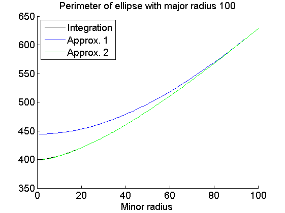
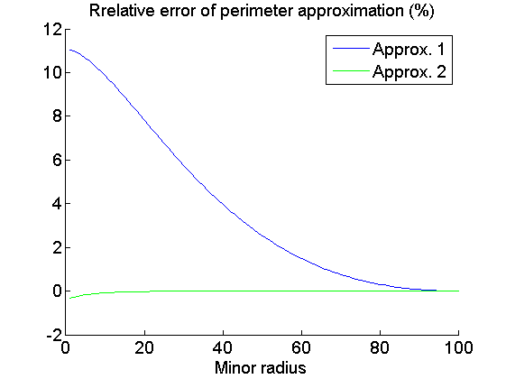

Contents
function calculePerimetreEllipse()
Perimeter computations
a = 100;
b = 1:100;
p = zeros(100, 3);
for i=1:100
p(i, 1) = perimIntegrate(a, b(i));
p(i, 2) = perimApprox1(a, b(i));
p(i, 3) = perimApprox2(a, b(i));
end
err1 = 100 * (p(:,2)-p(:,1)) ./ p(:,1);
err2 = 100 * (p(:,3)-p(:,1)) ./ p(:,1);
Display perimeters
figure; clf; hold on;
set(gca, 'fontsize', 14);
plot(b, p(:, 1), 'k');
plot(b, p(:, 2), 'b');
plot(b, p(:, 3), 'g');
legend({'Integration', 'Approx. 1', 'Approx. 2'}, 'location', 'NorthWest');
title('Perimeter of ellipse with major radius 100');
xlabel('Minor radius');

Display errors
figure; clf; hold on;
set(gca, 'fontsize', 14);
plot(b, err1, 'b');
plot(b, err2, 'g');
legend({'Approx. 1', 'Approx. 2'}, 'location', 'NorthEast');
title('Rrelative error of perimeter approximation (%)');
xlabel('Minor radius');
function p = perimApprox1(a, b)
p = pi * sqrt(2*(a.^2 + b.^2));
function p = perimApprox2(a, b)
p = pi*( 3*(a+b) - sqrt( (3*a+b) * (a+3*b) ) );
function p = perimIntegrate(a, b)
f = @(t) sqrt(a.^2.*cos(t).^2 + b.^2.*sin(t).^2) ;
p = 4*quad(f, 0, pi/2, 1e-6);
